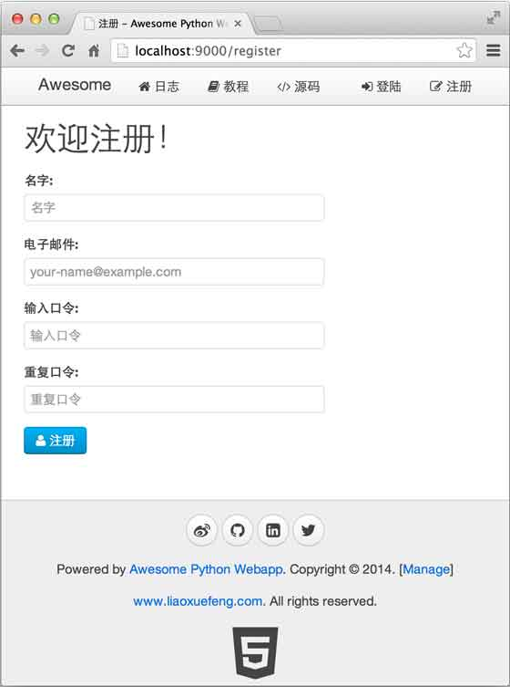

23-10 Day 10 - 用户注册和登录
用户管理是绝大部分Web网站都需要解决的问题。用户管理涉及到用户注册和登录。
用户注册相对简单，我们可以先通过API把用户注册这个功能实现了：
_RE_MD5 = re.compile(r'^[0-9a-f]{32}$')
@api
@post('/api/users')
def register_user():
i = ctx.request.input(name='', email='', password='')
name = i.name.strip()
email = i.email.strip().lower()
password = i.password
if not name:
raise APIValueError('name')
if not email or not _RE_EMAIL.match(email):
raise APIValueError('email')
if not password or not _RE_MD5.match(password):
raise APIValueError('password')
user = User.find_first('where email=?', email)
if user:
raise APIError('register:failed', 'email', 'Email is already in use.')
user = User(name=name, email=email, password=password, image='http://www.gravatar.com/avatar/%s?d=mm&s=120' % hashlib.md5(email).hexdigest())
user.insert()
return user
注意用户口令是客户端传递的经过MD5计算后的32位Hash字符串，所以服务器端并不知道用户的原始口令。
接下来可以创建一个注册页面，让用户填写注册表单，然后，提交数据到注册用户的API：
{％ extends '__base__.html' ％}
注册
<script>
function check_form() {
$('#password').val(CryptoJS.MD5($('#password1').val()).toString());
return true;
}
</script>
<div class="uk-width-2-3">
<h1>欢迎注册！</h1>
<form id="form-register" class="uk-form uk-form-stacked" onsubmit="return check_form()">
<div class="uk-alert uk-alert-danger uk-hidden"></div>
<div class="uk-form-row">
<label class="uk-form-label">名字:</label>
<div class="uk-form-controls">
<input name="name" type="text" class="uk-width-1-1">
</div>
</div>
<div class="uk-form-row">
<label class="uk-form-label">电子邮件:</label>
<div class="uk-form-controls">
<input name="email" type="text" class="uk-width-1-1">
</div>
</div>
<div class="uk-form-row">
<label class="uk-form-label">输入口令:</label>
<div class="uk-form-controls">
<input id="password1" type="password" class="uk-width-1-1">
<input id="password" name="password" type="hidden">
</div>
</div>
<div class="uk-form-row">
<label class="uk-form-label">重复口令:</label>
<div class="uk-form-controls">
<input name="password2" type="password" maxlength="50" placeholder="重复口令" class="uk-width-1-1">
</div>
</div>
<div class="uk-form-row">
<button type="submit" class="uk-button uk-button-primary"><i class="uk-icon-user"></i> 注册</button>
</div>
</form>
</div>
这样我们就把用户注册的功能完成了：

用户登录比用户注册复杂。由于HTTP协议是一种无状态协议，而服务器要跟踪用户状态，就只能通过cookie实现。大多数Web框架提供了Session功能来封装保存用户状态的cookie。
Session的优点是简单易用，可以直接从Session中取出用户登录信息。
Session的缺点是服务器需要在内存中维护一个映射表来存储用户登录信息，如果有两台以上服务器，就需要对Session做集群，因此，使用Session的Web App很难扩展。
我们采用直接读取cookie的方式来验证用户登录，每次用户访问任意URL，都会对cookie进行验证，这种方式的好处是保证服务器处理任意的URL都是无状态的，可以扩展到多台服务器。
由于登录成功后是由服务器生成一个cookie发送给浏览器，所以，要保证这个cookie不会被客户端伪造出来。
实现防伪造cookie的关键是通过一个单向算法（例如MD5），举例如下：
当用户输入了正确的口令登录成功后，服务器可以从数据库取到用户的id，并按照如下方式计算出一个字符串：
"用户id" + "过期时间" + MD5("用户id" + "用户口令" + "过期时间" + "SecretKey") 当浏览器发送cookie到服务器端后，服务器可以拿到的信息包括：
用户id
过期时间
MD5值
如果未到过期时间，服务器就根据用户id查找用户口令，并计算：
MD5("用户id" + "用户口令" + "过期时间" + "SecretKey")
并与浏览器cookie中的MD5进行比较，如果相等，则说明用户已登录，否则，cookie就是伪造的。
这个算法的关键在于MD5是一种单向算法，即可以通过原始字符串计算出MD5，但无法通过MD5反推出原始字符串。
所以登录API可以实现如下：
@api
@post('/api/authenticate')
def authenticate():
i = ctx.request.input()
email = i.email.strip().lower()
password = i.password
user = User.find_first('where email=?', email)
if user is None:
raise APIError('auth:failed', 'email', 'Invalid email.')
elif user.password != password:
raise APIError('auth:failed', 'password', 'Invalid password.')
max_age = 604800
cookie = make_signed_cookie(user.id, user.password, max_age)
ctx.response.set_cookie(_COOKIE_NAME, cookie, max_age=max_age)
user.password = '******'
return user
# 计算加密cookie:
def make_signed_cookie(id, password, max_age):
expires = str(int(time.time() + max_age))
L = [id, expires, hashlib.md5('%s-%s-%s-%s' % (id, password, expires, _COOKIE_KEY)).hexdigest()]
return '-'.join(L)
对于每个URL处理函数，如果我们都去写解析cookie的代码，那会导致代码重复很多次。
利用拦截器在处理URL之前，把cookie解析出来，并将登录用户绑定到ctx.request对象上，这样，后续的URL处理函数就可以直接拿到登录用户：
@interceptor('/')
def user_interceptor(next):
user = None
cookie = ctx.request.cookies.get(_COOKIE_NAME)
if cookie:
user = parse_signed_cookie(cookie)
ctx.request.user = user
return next()
# 解密cookie:
def parse_signed_cookie(cookie_str):
try:
L = cookie_str.split('-')
if len(L) != 3:
return None
id, expires, md5 = L
if int(expires) < time.time():
return None
user = User.get(id)
if user is None:
return None
if md5 != hashlib.md5('%s-%s-%s-%s' % (id, user.password, expires, _COOKIE_KEY)).hexdigest():
return None
return user
except:
return None
这样，我们就完成了用户注册和登录的功能。